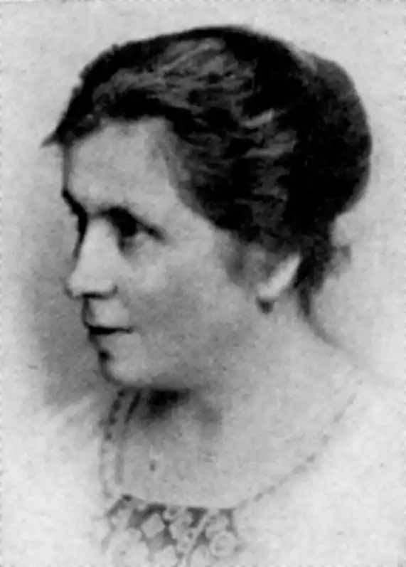
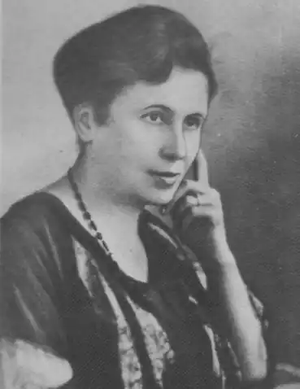

Катря Гриневичева
(1895 — 1947)
Катря Гриневичева належить до того кола письменників, яке з'явилося на обрії української літератури на початку XX ст. Вона формувалася у колі прогресивних, демократично настроєних літераторів Західної України, підтримувала дружні стосунки з В. Стефаником, Марком Черемшиною, О. Кобилянською, О. Маковеєм, Г. Хоткевичем. Найбільше орієнтувалася вона на І. Франка, який перший помітив її небуденний письменницький талант і почав друкувати її твори у редагованих ним виданнях. К. Гриневичева (Катерина Василівна Гриневич) народилася 19 листопада 1875р. у містечку Винники біля Львова в родині дрібного службовця. Коли дівчинці минуло три роки, її батьки переїхали до Кракова. Тут і минули дитячі й шкільні роки, тут закінчила польську вчительську семінарію й розпочала писати польською мовою. У семінарії було заведено факультативне вивчення української мови для тих майбутніх учительок, що мали працювати в Галичині, і К. Гриневичева починає вивчати рідну мову. На цей час припадає її зустріч із В. Стефаником, який схилив молоду письменницю до української літератури. Після закінчення семінарії дев'ятнадцятилітня вчителька повертається до Львова, де й прожила майже усе життя. Крім літератури, займалася редакційно-видавничою справою, стала однією з активних діячок жіночого руху в Галичині. Останні роки прожила в Німеччині, де й померла 25 грудня 1947р. Перша збірка К. Гриневичевої "Легенди і оповідання" (1906) була популярним чтивом, основу книжки становлять оповіді, присвячені тяжкому й безпросвітному життю бідарських дітей. Письменниця добре знала дитячу психологію, бачила, за яких тяжких умов зростали й виховувалися діти галицької бідноти, тому багато сил віддала народному вихованню, формуванню шкільної лектури. У 1910 —— 1912 pp. вона редагувала дитячий журнал "Дзвінок" (Львів 1890 — 1914). Враження, пережиті під час першої світової війни, покладені в основу збірки "Непоборні" (1926), яка принесла письменниці широке визнання поряд з творами на антивоєнну тему В. Стефаника, М. Черемшини, М. Яцківа, О. Кобилянської, повістю О. Турянського "Поза межами болю". Основою історичних повістей К. Гриневичевої "Шестикрилець" (1935) та "Шоломи в сонці" (1928) стали події на Галицько-волинській землі другої половини XII — початку XIII ст. Авторка спирається на історичні джерела, а також використовує тогочасні праці М. Грушевського, І. Линниченка, М. Кордуби, І. Шараневича, Д. Зубрицького. Увага письменниці зосереджується на основних подіях життя князя Романа Мстиславича: подорож до Угорщини, одруження з Рюриківною, похід на ятвягів, боротьба з великим боярством, укріплення західних кордонів, зміцнення зв'язків із півднем, боротьба з половцями, посилення єдності Русі, незгода з Рюриком Київським, похід на Польщу і смерть володаря. Повість склав своєрідний цикл оповідань, об'єднаних спільним героєм та ідейним пафосом. Письменниця творить культ свого героя — людини, воїна, князя, розуміє й виправдовує духовну самотність, твердість у боротьбі з боярською опозицією. Романа Мстиславича зображено за різних обставин, і скрізь він — розумний політик і дипломат, хоробрий воїн, лицар честі й доброти, великий будівничий своєї держави. Боротьба за спадщину Романа Мстиславича була не менш тривалою і жорстокою, ніж та, яку він вів, об'єднуючи і зміцнюючи Галицько-Волинське князівство. Про це йдеться у повісті "Шоломи в сонці", яка хронологічно продовжує "Шестикрильця", але має вже іншу тональність. Головним героєм твору виступає народ, він дає відсіч угорським окупантам Галича, стримує польський натиск на Волинь, розбиває Рюрика Київського з його найманцями. Героїчною смертю у цій битві гине і дівчина Ясиня, один із найсвітліших жіночих образів К. Гриневичевої. К. Гриневичева виробила власний стиль письма, її мова дещо архаїзована, як це й належить історичному полотну, збагачена давньоруською лексикою, взірцями давньої календарно-обрядової поезії. Сучасники докоряли їй за історизм мовлення, ускладненість образно-стильової системи. Письменниця дещо відійшла од традиційної оповідальності. Її стиль розрахований на емоційне, образне сприйняття подій. Можна визнати, що К. Гриневичева свідомо культивує стиль літературного бароко з його багатою орнаментикою, вишуканістю й вибагливістю вислову, високою поетичною насиченістю образу. Динамічний сюжет її традиційної історичної повісті заступають ряди розрізнених величних і барвистих картин. Сучасного читача, призвичаєного до ясного й прозорого тексту, можуть вразити незвичайні художні засоби письменниці, її примхливі синтаксичні конструкції, іноді досить заплутані структури, оригінальний словник. Багатий і розмаїтий декоративний реквізит є складовою частиною літературного мислення письменниці. Повісті К. Гриневичевої вияскравлюють цікаву й напружену сторінку історії нашої батьківщини. Письменниця оживила історію, привернула увагу до тих історичних осіб та безіменних героїв, які в грізну годину будували свою державність, захищали її від ворожих нападів і внутрішніх чвар. О. Мишанич Історія української літератури ХХ ст. — Кн. 2. — К.: Либідь, 1998.